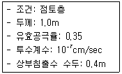
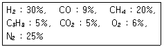
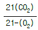
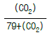
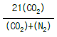
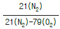
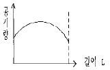
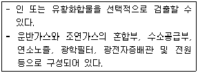
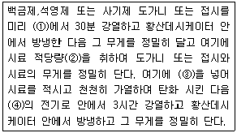

폐기물처리기사 (2003-08-31 기출문제)
1과목: 폐기물 개론
1. 함수율이 25%인 쓰레기를 건조시켜 함수율이 10%인 쓰레기로 만들려면 쓰레기 ton당 얼마의 수분을 증발시켜야 되는가?
- 167Kg
- 174Kg
- 179Kg
- 184Kg
(정답률: 알수없음)

2. 함수율이 98%인 슬러지를 함수율 95%로 낮추었을 때 운반량이 변화는 어떻게 되겠는가?(단, 슬러지 비중은 1.0, 질량기준 )
- 1/3로 감소
- 2/3로 감소
- 2/5로 감소
- 4/5로 감소
(정답률: 알수없음)
3. 무겁고 탄력있는 물질과 가볍고 탄력없는 물질을 선별하는데 사용하는 방법으로 콘베이어를 통해 폐기물을 주입시켜 천천히 회전하는 드럼위에 떨어뜨려서 분리하는 것은?
- Stoners
- Jigs
- Secators
- Table
(정답률: 알수없음)
4. PCB에 대한 설명으로 옳은 것은?
- 화학적으로 불안정하다.
- 물에는 녹지 않으나 지방질에는 녹는 성질이 있다.
- Biphenyl의 탄소기가 모두 염소로 치환된 합성물질이다.
- 열에 대해 안정하고 전기전도성이 우수하여 공업용 재료로 많이 쓰였다.
(정답률: 알수없음)
5. 적환 및 적환장에 관한 내용으로 알맞지 않은 것은?
- 수송차량 종류에 따라 직접적환,간접적환,저장적환으로 구분할 수 있다.
- 적환을 시행하는 주된 이유는 폐기물 운반거리가 연장되었기 때문이다.
- 적환장 설계시는 사용하고자 하는 적환작업의 종류, 용량 소요량, 환경요건 등을 고려하여야 한다.
- 적환장 설치장소는 수거하고자 하는 개별적 고형물 발생지역의 하중중심에 되도록 가까운 곳에 설치한다
(정답률: 알수없음)
6. 다음 중 폐기물의 발생량 조사 방법이 아닌 것은?
- 직접 계근법
- 간접 계근법
- 적재 차량 계수 분석법
- 물질 수지법
(정답률: 알수없음)
7. 혐기성 소화에서 독성을 유발시킬수 있는 물질의 농도로 가장 적절한 것은?
- Fe : 1,000 ㎎/ℓ
- Na : 3,500 ㎎/ℓ
- Ca : 1,500 ㎎/ℓ
- Mg : 800 ㎎/ℓ
(정답률: 알수없음)
8. 다음중 도시폐기물의 상업, 산업, 농업 활동에 의해 발생하는 유해 폐기물의 성분 물질 중 하나인 As의 증세와 가장 거리가 먼 것은?
- 무기력증 유발
- 피부염 유발
- Fanconi씨 증상
- 발암성 및 돌연 변이성
(정답률: 알수없음)
9. 폐기물 중의 회분 및 가연분 등의 함량을 분석하기 위하여 시료를 조제할 때 시료의 크기기준은?
- 건조시료를 2㎜이하로 분쇄한다.
- 건조시료를 3㎜이하로 분쇄한다.
- 건조시료를 4㎜이하로 분쇄한다.
- 건조시료를 5㎜이하로 분쇄한다.
(정답률: 알수없음)
10. 파쇄방법 중 전단파쇄방법에 관한 설명으로 틀린 것은?
- 회전전단형 파쇄기- 프라스틱, 고무 등을 비교적 적은 입도로 파쇄가 가능하다.
- 회전전단형 파쇄기- 용량이 적고 금속 및 토사류가 혼입되어서는 곤란하다.
- 왕복전단형 파쇄기- 소각로 전 파쇄등 대량, 연속 파쇄에 적합하다.
- 왕복전단형 파쇄기- 긴 목재류를 소각로에 공급할때 절단하는 것을 주목적으로 한다.
(정답률: 알수없음)
11. 건조된 고형분의 비중이 1.5이며, 이 슬러지의 건조 이전 고형분 함량 42%, 건조중량 300kg 이라고 한다. 건조이전의 슬러지 부피(m3)는?
- 약 0.55
- 약 0.61
- 약 0.83
- 약 1.09
(정답률: 알수없음)
12. 함수율이 90％인 슬러지의 겉보기 비중이 1.02 이었다. 이 슬러지를 진공여과기로 탈수하여 함수율이 60％인 슬러지를 얻었다면 이 슬러지가 갖는 겉보기 비중은?
- 약 1.32
- 약 1.24
- 약 1.16
- 약 1.08
(정답률: 알수없음)
13. 유해폐기물을 소각하였을 때 발생하는 물질로서 광화학 스모그의 원인이 되는 주된 물질은?
- 염화수소
- 일산화탄소
- 메탄
- 일산화질소
(정답률: 알수없음)
14. 폐기물 발생량을 예측하는 방법 중 단지 시간과 그에 따른 쓰레기 발생량(또는 성상)간의 상관관계만을 고려하는 것은?
- 동적모사모델
- 상관변수법
- 경향법
- 다중회귀모델
(정답률: 알수없음)
15. 다음은 관거(pipeline)를 이용한 폐기물의 수거방식에 관한 설명이다. 틀린 것은?
- 장거리 수송이 곤란하다.
- 전처리 공정이 필요 없다.
- 가설후에 경로변경이 곤란하고 설치비가 비싸다.
- 쓰레기 발생밀도가 높은 곳에서만 사용이 가능하다.
(정답률: 알수없음)
16. 다음 중 적환장(transfer station)을 설치해야 될 경우와 관계가 가장 먼 것은?
- 압축식 수거시스템의 경우
- 처리장이 멀리 떨어져 있는 경우
- 최종처리장이 소규모인 경우
- 수거차량이 소형일 때
(정답률: 알수없음)
17. 최근 국내에서 발생하는 지정폐기물 중 발생량이 가장 많은 것은?
- 소각재
- 부식성폐기물(폐산,폐알칼리)
- 폐합성고무
- 산업폐수처리오니
(정답률: 알수없음)
18. 다음과 같은 조성의 폐기물의 저위발열량(kcal/kg)을 Dulong 식을 이용하여 계산한 값으로 적절한 것은? [조성(%) : 휘발성고형물= 50, 수분= 20, 회분= 30 이며, 휘발성고형물의 원소분석결과는 C= 50, H= 30, O= 10, N= 10 이다.] (단, 탄소, 수소, 황의 연소반응열은 각각 8100 kcal/kg 34000 kcal/kg, 2500 kcal/kg으로 한다.)
- 5682.5
- 5782.5
- 5882.5
- 5982.5
(정답률: 알수없음)
19. 쓰레기 발생량이 5백만톤/년 인 지역의 수거인부의 하루 작업시간이 10시간이고, 1년의 작업일수는 300일 이며, 수거효율(MHT)은 1.8로 운영되고 있다면 필요한 수거인부의 수는?
- 3000
- 3100
- 3200
- 3300
(정답률: 알수없음)
20. 다음 중 폐기물관리 원칙인 3R에 포함되지 않는 것은?
- Recycling
- Reuse
- Resourse
- Reduction
(정답률: 알수없음)
2과목: 폐기물 처리 기술
21. 슬러지 소화(sluge digestion)의 목적에 대한 설명중 가장 타당한 내용은?
- 혐기성 또는 호기성 처리공법으로 슬러지의 양을 감소시키기 위한 것이다.
- 혐기성 또는 호기성 처리공법으로 이용 가능한 가스를 생산하기 위한 것이다.
- 혐기성 처리공법으로 온도가 높은 cake을 생산할 수있다.
- 혐기성 처리공법으로 비료가치가 높은 슬러지를 생산할 수 있다.
(정답률: 알수없음)
22. BOD가 15000mg/ℓ , Cl-이 800ppm인 분뇨를 희석하여 활성 오니법으로 처리한 결과 BOD가 30mg/ℓ , Cl-이 40ppm이었다면 처리효율은? (단, 희석수중에 BOD, Cl-은 없음)
- 90%
- 92%
- 94%
- 96%
(정답률: 알수없음)
23. 시안을 함유한 폐액의 처리방법에 대한 설명중 옳지 않은 것은?
- 알칼리염소법으로 처리할 경우 최종 생성물은 CO2와 N2이다.
- 시안을 철의 착화합물로 침전제거 시키는 방법은 슬러지량이 많고 시안제거가 완전하지 못하다.
- pH10 이상에서 산화시 HCN 가스가 다량 발생하므로 주의를 요한다.
- 오존에 의한 시안처리의 장점은 처리 과정 중 화합물의 투여가 불필요하다는 것이다.
(정답률: 알수없음)
24. 도랑식(trench)으로 밀도가 0.48t/m3인 폐기물을 매립하려고 한다. 도랑의 깊이가 3m이고, 다짐에 의해 폐기물을 2/3로 압축시킨다면 도랑 1m2당 매립할 수 있는 폐기물양은 몇 ton인가?
- 1.44ton
- 1.96ton
- 2.16ton
- 2.44ton
(정답률: 알수없음)
25. 쓰레기 종량제 봉투의 재질 중 특히 여름철 및 소각장용으로 가장 적합한 것은?
- EDPM
- CPE
- PVC
- MDPE
(정답률: 알수없음)
26. 다음과 같은 조건의 최초 침전지에서 1일 발생하는 슬러지의 부피는? · 폐수유입량: 20,000m3/일 · 유입폐수의 SS: 400mg/ℓ · 침전지의 SS 제거율: 45% · 슬러지의 비중: 1.15 (단, 기타사항은 고려하지 않음)
- 3.13m3
- 3.83m3
- 4.14m3
- 5.06m3
(정답률: 알수없음)
27. 평균온도가 15℃인 수거분뇨 20㎘/일을 처리하는 혐기성 소화조의 소화온도를 외부 가온에 의해 35℃로 유지하고자 한다. 이때 소요되는 열량은 몇 Kcal/일인가? (단, 소화조의 열손실은 없는 것으로 간주하고, 분뇨의 비열은 1.2Kcal/kg· ℃, 비중은 1.02이다.)
- 293.8× 103kcal/일
- 391.7× 103kcal/일
- 489.6× 103kcal/일
- 587.5× 103kcal/일
(정답률: 알수없음)
28. Crystallinity가 증가할수록 합성차수막이 나타내는 성질이라 볼 수 없는 것은?
- 인장강도 증가
- 열에 대한 저항성 증가
- 화학물질에 대한 저항성 증가
- 투수계수의 증가
(정답률: 알수없음)
29. 현재 우리나라의 매립지에서 침출수 생성에 가장 큰 영향을 주는 인자는?
- 표토를 침투하는 강수
- 쓰레기 분해과정에서 발생하는 발생수
- 매립쓰레기 자체 수분
- 지하수 유입
(정답률: 알수없음)
30. 쓰레기의 밀도가 750kg/m3이며 년간 매립된 쓰레기의 총량은 30,000t이다. 여기에서 유출되는 침출수(Leachete)는? (단, 쓰레기의 매립 높이는 6m이며, 년간강우량은 1,300mm이다. 침출수발생량 강우량의 30%)
- 약 30,000m3/년
- 약 2,600m3/년
- 약 1,300m3/년
- 약 600m3/년
(정답률: 알수없음)
31. 매립지 기체 발생단계를 4단계로 나눌 때 매립초기의 호기성 단계(혐기성,비메탄화 전단계)에 대한 설명으로 틀린 것은?
- 매립물의 분해속도에 따라 수일에서 수개월동안 계속 된다.
- N2의 발생이 급격히 소모된다.
- O2가 대부분 소모된다.
- 주요 생성기체는 CO2이다.
(정답률: 알수없음)
32. 토양오염 처리기술중 토양세척법에 관한 설명으로 가장 거리가 먼 것은?
- 적절한 세척제를 사용하여 토양 입자에 결합되어 있는 유해 유기오염물질의 표면장력을 약화시키거나 중금속을 분리시켜 처리하는 기법이다.
- 세척제로 사용되는 산,염기,착염물질은 금속물질을 추출,정화시키는데 주로 이용된다.
- 적용방법에 따라 in-situ, ex-situ 방법이 있으며 in-situ 기법은 토양의 투수성에 많은 제약을 받는다
- 휘발성이 큰 물질을 주로 정화하게 되며 비휘발성, 생물학적 난분해성물질도 분리 정화되는 부수적인 효과도 기대할 수 있다.
(정답률: 알수없음)
33. 오염된 토지를 정화하기 위한 물리적 처리기술로 가장 적절한 것은?
- 전기응집을 이용한 상분리 및 제거
- 자외선 등을 이용하여 강산화제인 레디컬을 생성하여 유기오염물 분해처리
- 저온연소에서 촉매이용 미량 유기물 산화
- 용매추출에 의한 중금속물질의 제거
(정답률: 알수없음)
34. 폐기물 광역처리의 장점이 아닌 것은?
- 건설비의 경감
- 수집운반비의 감소
- 처리안정성의 향상 및 처리의 고도화
- 처리, 처분용지의 확보가 용이
(정답률: 알수없음)
35. 슬러지에 수분이 결합하는 상태는 보통 5가지로 나누어진다. 이 중에서 그 속에 들지 않는 것은?
- 모관결합수
- 쐐기상유리수
- 간극모관결합수
- 표면부착수
(정답률: 알수없음)
36. 다음과 같은 조건인 경우 침출수가 차수층을 통과하는 시간은?

- 약 4년
- 약 6년
- 약 8년
- 약 10년
(정답률: 알수없음)
37. 합성수지계 차수막에 관한 설명으로 틀린 것은?(단, 점토와 비교 )
- 경제성: 재료의 가격이 고가이다
- 차수성: Bentonite 첨가시 차수성이 높아진다
- 적용지반: 어떤 지반에도 가능하나 급경사에는 시공시 주의가 요구된다
- 내구성: 내구성은 높으나 파손 및 열화위험이 있으므로 주의가 요구된다
(정답률: 알수없음)
38. 침출수 처리방법인 오존산화처리 및 펜턴산화처리에 관한 설명으로 틀린 것은?
- 오존산화처리는 유입수질 변화시 탄력적인 대응이 어렵다
- 오존산화처리는 상수처리시설이나 화학폐수처리시설에 적용할 수 있다
- 펜턴산화처리의 필요시설은 pH조정조, 급속,완속 교반조, 침전지가 있다
- 펜턴산화처리시에 사용되는 주요약품은 과산화수소수와 철염이다
(정답률: 알수없음)
39. 호기성 퇴비화에 대한 다음 설명중 틀린 것은?
- 퇴비화에 적당한 함수율은 50-60%이다.
- 내부온도가 60-70℃까지 상승하므로 병원균, 회충란 등이 사멸한다.
- 퇴비화 과정에서 산소요구량을 만족시키기 위하여 폐기물을 교반시키거나 공기주입장치를 사용하여 공기를 공급한다.
- C/N비는 탄소와 질소의 비를 말하며 퇴비화가 끝나면 C/N비는 상승한다.
(정답률: 알수없음)
40. 혐기성 소화조의 가온 방법중 자동제어설비가 필요하고 시설비가 싸며 조작이 간단하나 소화액의 양이 다소 증가하는 특징이 있는 것은?
- 온수 통과방법
- 열교환기를 사용하는 방법
- 조내에 수증기를 흡입하는 방법
- 국부적 열가열 방식
(정답률: 알수없음)
3과목: 폐기물 소각 및 열회수
41. 스토카식 소각로에 있어서 여러 개의 부채형 화격자를 로폭(爐幅) 방향으로 병열로 조합하고, 한 조의 화격자를 형성하여 편심 캠에 의한 역주행 Grate로 되어 있는 연소 장치의 종류는?
- 반전식 (Traveling back Stoker)
- 계단식 (Multistepped pushing grate Stoker)
- 병열계단식 (Rows forced feed grate Stoker)
- 역동식 (Pushing back grate Stoker)
(정답률: 알수없음)
42. 다음 조성의 기체연료 1Sm3을 완전연소 시키기 위해 필요한 이론공기량(Sm3/Sm3)은?

- 8.9
- 5.4
- 3.8
- 2.1
(정답률: 알수없음)
43. 다이옥신의 생성방지 및 제거대책에 대한 설명이다. 틀린것은?
- 소각로의 온도를 850℃이상의 고온으로 유지한다.
- 소각로의 상부에 2차 연소로를 설치하여 연소가스의 체류시간을 증가시킨다.
- 다이옥신 함유 배기가스가 촉매층을 통과하면서 촉매와 반응하여 H2O, CO2, 미량의 HCl로 산화분해 시키는 In-Duct SCR을 적용한다
- 다공성 활성탄을 주입과 함께 전기집진시설을 설치한다.
(정답률: 알수없음)
44. 완전연소일 경우의 (CO2)max의 값(%)은?




(정답률: 알수없음)
45. 아세틸렌(C2H2) 1kg을 완전연소시 발생한 CO2량(kg)은 프로판(C3H8) 1kg 연소시의 몇 배인가?
- 약 0.8
- 약 1.1
- 약 1.4
- 약 1.8
(정답률: 알수없음)
46. 연소에 필요한 가연물의 구비조건으로 틀린 것은?
- 화학적으로 활성이 강할 것
- 반응열이 클 것
- 활성화에너지가 클 것
- 표면적이 클 것
(정답률: 알수없음)
47. CO2 100kg은 표준상태에서 부피가 얼마인가?(단, CO2는 이상기체이고, 표준상태로 간주한다.)
- 22.4m3
- 44.8m3
- 50.9m3
- 67.1m3
(정답률: 알수없음)
48. 용적밀도가 700kg/m3인 폐기물을 처리하는 소각로에서 질량감소율과 부피감소율이 각각 85%, 90%인 경우 이 소각로에서 발생하는 소각재의 밀도는?
- 820kg/m3
- 890kg/m3
- 910kg/m3
- 1⑤0kg/m3
(정답률: 알수없음)
49. 다음은 쓰레기 고체연료화(RDF)소각로의 문제점에 대하여 설명하고 있다. 잘못된 것은?
- 시설비가 고가이며 숙련된 기술이 필요하다.
- 연료공급의 신뢰성 문제가 있을 수 있다.
- 소각시설의 부식발생으로 인하여 수명이 단축될 수있다.
- 유황함량이 상대적으로 많아 SOx의 발생이 문제가 된다.
(정답률: 알수없음)
50. 다음의 열교환기에 대한 설명 중 틀린 것은?
- 공기예열기는 연료의 착화와 연소를 양호하게 하고 연소온도를 높이는 부대효과가 있다.
- 과열기는 증기 터어빈속에서 포화증기를 이용하여 그 압력으로 재차 가열하여 다시 터어빈을 돌릴 때 사용한다.
- 이코노마이저(절탄기)는 굴뚝에 설치되며, 연소가스 여열로 보일러의 급수를 예열하여 보일러의 효율을 높이는 장치이다.
- 공기예열기는 굴뚝 배출가스 여열로 연소용 공기를 예열하여 보일러의 효율을 높인다.
(정답률: 알수없음)
51. 열분해 장치의 방식 중 주입폐기물의 입자가 작아야 하고 주입량이 크지 못한 단점과 어떤 종류의 폐기물도 처리가 가능한 장점을 가지는 것으로 가장 적절한 것은?
- 부유상 방식
- 유동상 방식
- 다단상 방식
- 고정상 방식
(정답률: 알수없음)
52. 다음 중 다단로 소각로의 설명 중 틀린 것은?
- 다단로소각로는 건조영역, 연소 및 탈취 영역, 냉각 영역으로 나눌 수 있다.
- 물리, 화학적 성분이 다른 각종 폐기물을 처리할 수있다.
- 분진발생율이 높다.
- 단계적 온도반응으로 보조연료이용 조절이 용이하다.
(정답률: 알수없음)
53. 그림은 어떤 소각로의 소각로 길이에 대한 연소용 공기량을 나타낸 것이다. 가장 적절한 내용은?

- 주연소부가 일정치 않다.
- 소각로 상단부에 주연소부가 있다.
- 주입공기량이 가장 많은 부근이 주연소부위가 된다.
- 소각로 후미에 주연소 부위가 있다.
(정답률: 알수없음)
54. 폐기물 열분해 연소공정에 대한 설명으로 잘못된 것은?
- 열분해공정중 고온법이란 열분해온도가 1,100 ∼ 1,500℃의 고온에서 행하는 방법이다
- 열분해공정중 저온법이란 고온법에 비해 타르(Tar), 유기산,탄화물(Char) 및 액체상태의 연료가 적게 생성된다
- 폐기물내 수분함량이 많을수록 열분해에 소요되는 시간이 길어진다
- 폐기물의 입경이 미세할수록 열분해가 쉽게 일어난다
(정답률: 알수없음)
55. 다음과 같은 중량조성의 고체연료의 고위발열량(Hh)은? (다음: C=75%, H=5%, O=10%, S=4%, 기타)
- 약 3400kcal/kg
- 약 5400kcal/kg
- 약 7400kcal/kg
- 약 9400kcal/kg
(정답률: 알수없음)
56. 폐기물 소각로에 관한 설명이다. 다음 중 잘못된 것은?
- 화상부하율은 연소량에 비례하여 증가한다.
- 소각로의 열부하율이 적은 경우 보조 연료 사용량이 감소한다.
- 화상면적이 줄면 화상부하율은 증가한다.
- 화상부하율은 소각로 구조, 형식 및 폐기물의 성상에 영향을 받는다.
(정답률: 알수없음)
57. 20,000kJ/m3 의 열을 방출하는 회전로에서 400kg/hr의 속도로 슬러지케익를 소각하기 위해 필요한 킬른의 길이는 (m)? (단, 슬러지케익의 발열량 6,500kJ/kg이며 회전로의 길이와 지름의 비는 5:1이다.)
- 8.2
- 12.1
- 14.4
- 16.1
(정답률: 알수없음)
58. 액상폐기물의 소각처리를 위하여 액체 주입형 연소기(Liquid Injection Incinerator)를 사용하고자 할 때 장점으로서 적당하지 않은 것은?
- 광범위한 종류의 액상폐기물을 연소할 수 있다.
- 대기오염 방지시설 이외에 소각재의 처리설비가 필요없다.
- 구동장치가 없어서 고장이 적다.
- 대량처리가 가능하다.
(정답률: 알수없음)
59. 소각로에서 열교환기를 사용하여 고온의 배기가스로 부터 열을 회수해 급수를 예열하고자 한다. 공기의 유량은 1000kg/hr, 물의 유량은 2000kg/hr이며, 이 때 배기가스의 입구온도는 600℃, 출구온도는 400℃, 급수의 입구 온도는 10℃일 경우에 급수의 출구온도(℃)는? (단, 물, 배기가스의 비열은 각 1.0, 0.22kcal/kg· ℃)
- 24
- 28
- 32
- 38
(정답률: 알수없음)
60. 다음중 연소온도를 높일 수 있는 조건과 가장 거리가 먼것은?
- 공기비를 높인다.
- 완전연소를 시킨다.
- 연료와 공기를 예열한다.
- 발열량이 높은 연료를 사용한다.
(정답률: 알수없음)
4과목: 폐기물 공정시험기준(방법)
61. 시료의 채취방법에 관한 설명 중 올바른 것은?
- 콘크리트 고형화물의 시료를 채취하는 경우 대형의 고형화물로써 분쇄가 어려울 경우에는 임의의 3개소에서 채취하여 각각 파쇄하고 100g씩 균등량 혼합하여 채취한다.
- 액상혼합물의 시료를 채취하는 경우 원칙적으로 최초 지점의 유입구에서 흐르는 도중에 채취한다.
- 노르말헥산추출물질, 유기인, PCB 및 휘발성저급염소화 탄화수소류 시험을 위한 시료의 채취시 시료용기는 무색경질의 유리병 또는 폴리에틸렌병을 사용하여야 한다.
- 폐기물이 적재되어 있는 운반차량에서 시료를 채취할 경우 채취 갯수는 5톤 이상의 차량에 적재되어 있을 때 평면상에서 9등분한 후 각 등분마다 시료를 채취한다
(정답률: 알수없음)
62. 액상(물)유기성 폐기물을 용매 추출에 의하여 처리하고자 할 때 용매 선택기준으로 옳지 않은 것은?
- 폐기물 성분에 대한 선택성(Selectivity)이 높아야 효율이 좋다.
- 폐기물 성분과 용매가 휘발성(Volatility)이 비슷해야 한다.
- 물에 대한 용해도가 낮아야 한다.
- 물과 용매의 비중차이가 커야 한다.
(정답률: 알수없음)
63. 유기인을 가스크로마토 그래피법으로 정량하고자 한다. 정제용 컬럼으로 적당하지 않은 것은?
- 규산칼럼
- 활성탄칼럼
- 알루미나칼럼
- 플로리실칼럼
(정답률: 알수없음)
64. 시안(CN)분석을 위한 흡광광도법의 시험방법과 흡광도가 측정되는 용액이 나타내는 최종 색(色)을 바르게 나타낸것은?
- 피리딘 피라졸론법 - 청색
- 디페닐 카르바지드법 - 적자색
- 디에틸 디티오카르바민산은법 - 적자색
- 디티존법 - 청록색
(정답률: 알수없음)
65. 가스크로마토그래프 검출기 중 아래와 같은 특징을 갖는 것은?

- 알칼리열이온화 검출기
- 수소염이온화 검출기
- 전자포획형 검출기
- 불꽃광형 검출기
(정답률: 알수없음)
66. 폐기물공정시험법에서 지정된 시험방법에 따라 시험하였을 경우 유효측정농도는?
- 그 시험방법에 대한 최소정량한계를 의미한다.
- 그 시험방법에 대한 평균정량한계를 의미한다.
- 그 시험방법에 대한 최대정량한계를 의미한다.
- 그 시험방법에 대한 정량인정한계를 의미한다.
(정답률: 알수없음)
67. 폐기물공정시험방법상 흡광광도법과 이온전극법 두 가지 시험법을 병행할 수 있는 물질은?
- 크롬
- 시안
- 할로겐화유기물질
- 카드뮴
(정답률: 알수없음)
68. 다음은 구리의 시험법에 관한 기술이다. 옳지 않는 것은?
- 원자흡광광도법으로 정량할 때 정량범위는 장치 및 측정조건에 따라 다르지만 324.7nm에서 0.2∼4㎎/ℓ이다.
- 흡광광도법으로 정량할 때 정량범위는 440nm에서 0.002∼0.03mg이다.
- 원자흡광광도법으로 정량할 때 구리중공음극램프와 아세틸렌-공기를 사용한다.
- 흡광광도법으로 정량할 때 검수 중 비스머스가 구리의 양의 50%이상 존재할 때는 청색을 나타내어 방해 한다.
(정답률: 알수없음)
69. 다음은 강열감량 및 유기물함량 분석에 관한 내용이다 ( ) 알맞는 것은? (순서대로 ①, ②, ③, ④)

- 550± 25℃,10g 이상,25% 황산암모늄용액,550± 25℃
- 600± 25℃,10g 이상,25% 황산암모늄용액,600± 25℃
- 550± 25℃,20g 이상,25% 질산암모늄용액,550± 25℃
- 600± 25℃,20g 이상,25% 질산암모늄용액,600± 25℃
(정답률: 알수없음)
70. 흡광광도법에서 흡광도 눈금의 보정시 사용되는 용액은?
- 중탄산칼륨
- 중크롬산칼륨
- 과망간산칼슘
- 탄산나트륨
(정답률: 알수없음)
71. 시료 용기에 기재할 사항과 가장 거리가 먼 것은?
- 채취기구, 대상 폐기물 분석항목
- 시료번호, 채취책임자 이름
- 채취방법, 보관상태
- 채취시간 및 일기, 시료의 양
(정답률: 알수없음)
72. [ 가스크로마토그래피법에서의 정량분석은 각 분석방법에서 규정하는 방법에 따라 시험하여 얻어진 ( ), ( ),( )의 관계를 검토하여 분석한다. ] ( )안에 들어갈 내용으로 적합치 못한 것은?
- 크로마토그램의 재현성
- 시료성분의 양
- 피이크의 유지시간
- 피이크의 면적
(정답률: 알수없음)
73. 원자흡광광도법의 정량법 중 분석시료중에 다량으로 함유된 공존원소와 목적원소와의 흡광도 비를 구하는 동시, 측정을 행하는 것은?
- 검량선법
- 표준첨가법
- 내부표준법
- 비교표준법
(정답률: 알수없음)
74. 회화에 의한 유기물 분해시 회화로의 가열온도로서 적당한 것은?
- 200∼300℃
- 300∼400℃
- 400∼500℃
- 500∼600℃
(정답률: 알수없음)
75. 유도결합플라스마발광광도법(ICP)에 관한 설명 중 틀린것은?
- ICP는 시료를 고주파유도코일에 의하여 형성된 알곤플라스마에 도입하여 4000-6000K에서 기저된 원자가 여기상태로 이동할 때 방출하는 발광선 및 발광광도를 측정하여 원소의 정성 및 정량분석에 이용하는 방법이다.
- ICP는 알곤가스를 플라스마 가스로 사용하여 수정발진식 고주파 발생기로부터 발생된 27.13MHZ 주파수영역에서 유도코일에 의하여 플라스마를 발생시킨다.
- ICP의 구조는 중심에 저온, 저전자 밀도의 영역이 형성되어 도너츠 형태로 되는데 이 도너츠 모양의 구조가 ICP의 특징이다.
- 플라스마의 온도는 최고 15,000K까지 이른다.
(정답률: 알수없음)
76. 다음 중 유기인을 가스크로마토그래프법으로 분석할 때 고정상 담체가 아닌 것은?
- 크로마토그래피용 크로모솔브 W
- 크로마토그래피용 크로모솔브 G
- 크로마토그래피용 가스크롬 Q
- 크로마토그래피용 실리콘 DC-20
(정답률: 알수없음)
77. 수소이온농도 측정에 관한 내용으로 틀린 것은?
- 고상폐기물인 경우는 시료 10g을 50mL 비이커에 취하여 증류수 25mL를 넣어 잘 교반하여 30분 이상 방치한 다음 이 현탁액을 검액으로 한다.
- pH 11이상의 시료는 오차가 크므로 알칼리에서 오차가 적은 특수전극을 쓴다.
- 액상폐기물인 경우는 유리전극을 미리 물에 수시간 이상 담그어 두어야 하며, 측정기에 전원을 넣어 5분 이상 경과 후 사용한다.
- 수소이온농도의 재현성은 3회 이상 되풀이하여 측정하였을 때 ± 0.5이내이어야 한다.
(정답률: 알수없음)
78. 원자흡광광도법에 의한 수은(Hg) 측정방법에 관한 내용으로 틀린 것은?
- 환원기화장치를 사용하여 수은증기를 발생시킨다.
- 시료중의 수은을 금속수은으로 환원시키려면 염화제일주석용액이 필요하다.
- 원자흡광분석장치에는 유리제 흡수셀을 부착하여 사용한다.
- 시료중 벤젠, 아세톤 등의 휘발성 유기물질도 253.7nm에서 흡광도를 나타내므로 추출분리 후 시험한다.
(정답률: 알수없음)
79. 다음 총칙에 관한 사항 중 잘못 정의된 것은?
- '정확히 단다'라 함은 규정된 양의 검체를 취하여 분석용 저울로 0.1mg까지 다는 것을 말한다.
- '정확히 취하여'라 하는 것은 규정된 양의 검체 또는 시액을 메스실린더로 정확한 눈금까지 취하는 것을 말한다.
- '냄새가 없다.'라고 기재한 것은 냄새가 없거나 또는 거의 없는 것은 표시하는 것이다.
- 여과용 기구 및 기기를 기재하지 아니하고 '여과한다'라고 하는 것은 KSM 7602거름종이 5종 A 또는 이와 동등한 여지를 사용하여 여과함을 말한다.
(정답률: 알수없음)
80. 폐기물시료를 조제하기 위한 축소방법중 쌓여진 육면체의 측면을 교대로 돌면서 균등량씩을 취하여 두개의 원추를 쌓고 이중 하나는 버리면서 계속 시료의 크기를 줄이는 방법은?
- 구획법
- 교호삽법
- 원추 2분법
- 원추 4분법
(정답률: 알수없음)
5과목: 폐기물 관계 법규
81. 사업장폐기물배출자 등은 매년 폐기물의 발생· 처리 및 재활용 등에 관한 사항을 관할 기관의 장에게 보고하여야 하는데, 그 기한으로 적절한 것은?
- 다음연도 1월말까지
- 다음연도 2월말까지
- 다음연도 3월말까지
- 다음연도 4월말까지
(정답률: 알수없음)
82. 중간처리시설인 기계적 처리시설 중 증기멸균분쇄시설에 관한 설명으로 틀린 것은?
- 섭씨 100℃이상 및 계기압으로 3기압이상인 상태에서 폐기물이 10분이상 체류되도록 유지하여야 한다
- 폐기물은 원형을 알아 볼 수 없을 정도로 분쇄하되, 딱딱한 것은 2센티미터이하로 분쇄하여야 한다
- 자동기록지는 연결방식으로 사용하여야 한다
- 수분함량이 50%이하가 되도록 건조하여야 한다
(정답률: 알수없음)
83. 다음 중 감염성폐기물의 종류에 관한 내용으로 틀린것은?
- 시험,검사등에 사용된 배양용기
- 주사바늘, 치과용침(한방침 제외)
- 일회용 주사기
- 수액세트
(정답률: 알수없음)
84. 시간당 처리능력이 2톤이상인 소각시설에서 배출되는 다이옥신 측정주기기준으로 적절한 것은?
- 월 1회이상
- 분기 1회이상
- 반기 1회이상
- 연 1회이상
(정답률: 알수없음)
85. 지정폐기물의 분류번호가 잘못된 것은?
- 01-00-00 : 특정시설에서 발생되는 폐기물
- 02-00-00 : 부식성폐기물
- ⑤-00-00 : 유해물질함유 폐기물
- 10-00-00 : 감염성 폐기물
(정답률: 알수없음)
86. 청정지역에서의 관리형 매립시설에서 배출되는 침출수내 오염물질 중 총인의 허용기준(mg/L)으로 적절한 것은?
- 2이하
- 4이하
- 8이하
- 16이하
(정답률: 알수없음)
87. 지정폐기물은 처리하기 전에 그 처리의 적법성을 증명하는 서류를 사전에 제출하여 행정관청의 확인을 받아야 한다. 배출량에 관계없이 확인대상이 되는 폐기물로 적절치 않은 것은?
- 감염성폐기물
- 폐유독물
- 폴리클로리네이티드비페닐 함유 폐기물
- 폐유기용제
(정답률: 알수없음)
88. 폐기물처리업자가 허가를 받은 후 1년이내에 영업을 개시하지 아니한 경우, 1차 행정 처분기준은?
- 경고
- 개시명령
- 허가취소
- 등록취소
(정답률: 알수없음)
89. 다음 중 관리형 매립시설의 라이너로 사용되는 매끄러운 고밀도 폴리에틸렌의 기준에 적합하지 않는 사항은?
- 밀도 : 0.940g/cm3이상
- 카본블랙함량 : 2.0∼3.0%
- 항복인장강도 : 10kgf/cm2이상
- 내환경응력균열성 : 1,500hr 이상
(정답률: 알수없음)
90. 매립시설의 검사기관과 거리가 먼 것은?
- 환경관리공단
- 한국건설기술연구원
- 농업기반공사
- 국립환경연구원
(정답률: 알수없음)
91. 폐기물관리법에서 규정하고 있는 폐기물처리업종이 아닌것은?
- 폐기물수집· 운반업
- 폐기물종합처리업
- 폐기물중간처리업
- 폐기물재생처리업
(정답률: 알수없음)
92. 시간당 처리능력이 2톤이상인 생활폐기물 소각시설(1997년 7월19일전 설치된 시설)의 현재 다이옥신 배출 기준으로 적절한 것은?(단, 단위 ng-TEQ/Nm3)
- 0.1
- 0.3
- 0.5
- 1.0
(정답률: 알수없음)
93. 기술관리인을 임명하지 아니하고 기술관리대행계약을 체결하지 아니한 자에 대한 처분으로 적절한 내용은?
- 1천만원이하의 과태료에 처한다
- 2년이하의 징역 또는 1500만원이하의 벌금에 처한다
- 3년이하의 징역 또는 2000만원이하의 벌금에 처한다
- 5년이하의 징역 또는 3000만원이하의 벌금에 처한다
(정답률: 알수없음)
94. [ 폐기물처리자는 폐기물을 인수하는 때에 인계받은 폐기물인계서 5매의 작성 해당란을 기재,확인한 후 폐기물 인계서(5)는 운반자에게 돌려주고 폐기물 인계서(4)는 보관하며, 폐기물인계서(3)은 운반자로부터 폐기물을 인수받은 날부터 ( )이내에 배출자에게 송부하고... ] ( )안에 알맞는 내용은?
- 3일
- 7일
- 10일
- 15일
(정답률: 알수없음)
95. 폐기물관리법상 특별시장, 광역시장, 도지사와 시장,군수 구청장(자치구의 구청장)이 수립하는 폐기물처리에 관한 기본계획에 포함될 사항으로 가장 거리가 먼 것은?
- 소요재원의 확보계획
- 폐기물 감량화 및 재활용등 자원화에 관한 사항
- 폐기물처리시설의 설치현황 및 향후 설치계획
- 폐기물처리업 현황 및 향후 수요에 관한 사항
(정답률: 알수없음)
96. 생활폐기물의 처리대행자에 해당되지 않는 것은?
- 폐기물처리업의 허가를 받은 자
- 한국자원재생공사(폐가구 및 폐가전제품을 재활용 하는 경우에 한한다)
- 환경관리공단(음식물류 폐기물 포함)
- 폐기물재활용신고를 한 자
(정답률: 알수없음)
97. 기술관리인을 두어야 하는 '사료화' 시설기준으로 적절한 것은?
- 1일 처리능력이 3톤이상인 시설
- 1일 처리능력이 5톤이상인 시설
- 1일 처리능력이 10톤이상인 시설
- 1일 처리능력이 25톤이상인 시설
(정답률: 알수없음)
98. 폐기물처리시설중 기계적 처리시설이 아닌 것은?
- 연료화시설
- 증발,농축시설
- 유수분리시설
- 고형화시설
(정답률: 알수없음)
99. 다음은 폐기물처리담당자 교육대상자의 선발 및 등록에 관한 설명이다. 틀린 것은?
- 환경부장관은 교육계획을 매년 12월 31일까지 시· 도지사에게 통보하여야 한다.
- 시· 도지사는 교육대상자를 선발하여 교육과정 개시 15일전까지 교육기관장에게 통보하여야 한다.
- 시· 도지사는 교육대상자를 선발한 때에는 교육대상자를 고용한 자에게 지체없이 통보하여야 한다.
- 교육대상자로 선발된 자는 해당 교육기관에 교육개시 전까지 등록을 하여야 한다.
(정답률: 알수없음)
100. 매립시설의 기술관리인 자격기준에 해당되지 않은 것은?
- 폐기물처리기사
- 대기환경기사
- 건설기계기사
- 토목기사
(정답률: 알수없음)